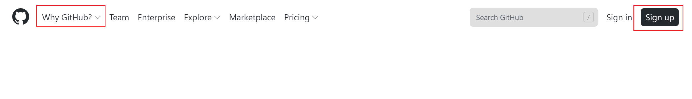

1. Github简介¶
1.1. 楔子¶
本教程意图可以让没有技术背景的同学也能快速准确地使用github这个方便高效的工具进行文档代码化开发。故而对于Git工具和Github这一仓库托管网站不再进行概念上的区分。
我们一般会在自己的本地电脑上进行文档写作，然后保存在本地。这种传统的写作方式有自己的弊端。考虑这样一个问题，假如今天我出门在外，但是有一个突发的任务需要我修改文档并提交，手里没有保存文档的那个电脑。或者这样一个问题，当我修改完一章之后，发现写作任务被修改了，需要改回当初写作的那个版本。或许我们会很容易的想到解决方法，把这个文档每次写完后存到网盘，为每一次修改都保存一个版本。你可能觉得这样会很麻烦，但是如果有一个网盘工具能帮助你记录这些东西，你只需要动动手指就可以实现上面提到的功能，是不是很酷！Github以及围绕它的一些软件，就是这样一个东西，而且，它远远不止这些东西！
1.2. Github是什么¶
初学者可以把Github理解成一个云端的网盘。每次你在本地完成了写作，把文件上传到远程的网盘里，它都会为你忠实的记录你的每一次修改，方便你看到最新的工作进程。同时他还能将你的工作恢复到任何有提交记录的版本。这些特质，让Github在多人协作过程中，也能展示它强大的能力。
1.3. Github在哪里¶
直接在浏览器中输入 www.github.com 或者使用搜索引擎直接搜索github进入官方页面。

Why Github向我们详细展示了Github应用场景和基本功能。
我们需要做的第一步就是加入Github。通过Sign Up按钮，注册Github账号。注册完毕后登录就可以开始使用Github了。